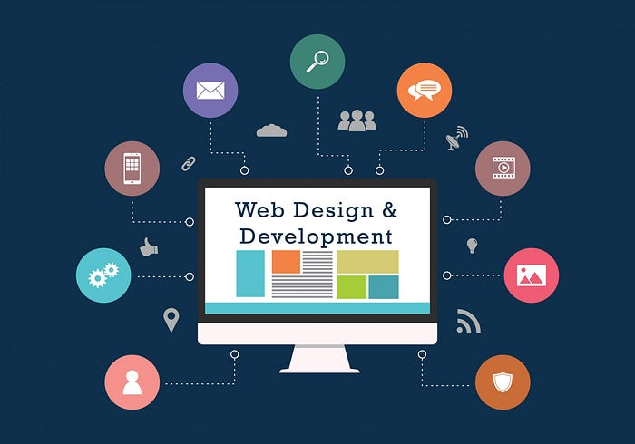
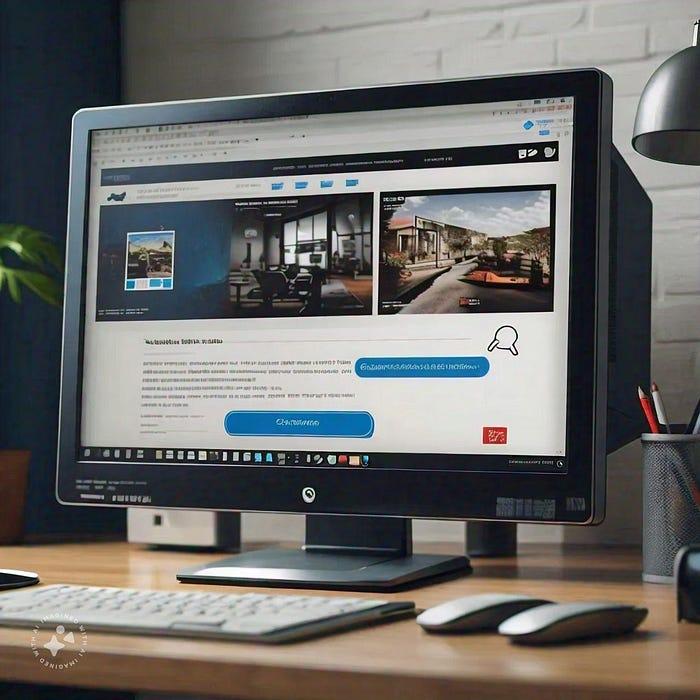

The Ultimate Guide to Modern Web Development: Trends, Tools, and Best Practices

In the dynamic world of technology, web development stands as a pivotal discipline that drives the creation of interactive, user-centric digital experiences. From building a simple blog to developing complex web applications, the field of web development has evolved significantly. As we navigate through 2024, understanding the latest trends, tools, and best practices in web development is crucial for developers, businesses, and enthusiasts alike. This comprehensive guide explores the current landscape of web development, providing insights into emerging trends, essential tools, and best practices for creating robust, scalable, and engaging web applications.
The Evolution of Web Development
1. The Early Days: Static Websites
In the early days of the internet, websites were predominantly static, consisting of HTML pages with fixed content. These sites were simple and straightforward but lacked interactivity and dynamic content. Web development was primarily about writing HTML and CSS to create and style web pages.
2. The Rise of Dynamic Content
The advent of server-side scripting languages like PHP and ASP.NET marked a significant shift. Dynamic content generation allowed for more interactive and personalized web experiences. Databases such as MySQL and SQL Server enabled websites to manage and display data more efficiently.
3. The Web 2.0 Era
Web 2.0 introduced a more interactive and user-centric web experience. Technologies like JavaScript, AJAX, and RESTful APIs enabled asynchronous data loading and rich user interfaces. The rise of content management systems (CMS) such as WordPress and Drupal democratized web development, allowing users to create and manage content more easily.
4. The Modern Web: Single-Page Applications and Progressive Web Apps
Today, web development embraces single-page applications (SPAs) and progressive web apps (PWAs). SPAs, powered by frameworks like React, Angular, and Vue.js, offer seamless user experiences by loading content dynamically without refreshing the entire page. PWAs combine the best of web and mobile apps, providing offline capabilities and improved performance.
Current Trends in Web Development
1. Jamstack Architecture
Jamstack (JavaScript, APIs, and Markup) is a modern web development architecture that emphasizes decoupling the frontend from the backend. This approach enhances performance, security, and scalability by leveraging static site generators and serverless functions. Popular Jamstack tools include Next.js, Gatsby, and Nuxt.js.
2. Serverless Computing
Serverless computing allows developers to build and deploy applications without managing server infrastructure. Services like AWS Lambda, Azure Functions, and Google Cloud Functions enable developers to focus on code rather than server management. This trend promotes scalability, cost-efficiency, and reduced operational overhead.
3. API-First Development
API-first development prioritizes designing and building APIs before developing the frontend or backend. This approach ensures that APIs are well-defined, consistent, and scalable, enabling seamless integration across different services and platforms. Tools like Swagger/OpenAPI and Postman facilitate API design and testing.
4. WebAssembly (Wasm)
WebAssembly is a binary instruction format that enables high-performance execution of code on the web. By allowing languages like C, C++, and Rust to run in the browser, WebAssembly opens up new possibilities for performance-critical applications. It complements JavaScript, providing a powerful option for complex computational tasks.
5. Mobile-First and Responsive Design
With the proliferation of mobile devices, mobile-first and responsive design have become essential. Mobile-first design involves creating web experiences optimized for mobile users before adapting to larger screens. Responsive design ensures that web content adjusts seamlessly to different screen sizes and orientations.
Essential Tools and Technologies
1. Development Frameworks and Libraries
- React: A JavaScript library for building user interfaces, maintained by Facebook. It excels in creating reusable UI components and managing application state.
- Angular: A robust framework developed by Google for building dynamic web applications with a comprehensive set of tools and features.
- Vue.js: A progressive framework for building user interfaces. It offers an approachable learning curve and flexibility for integrating with other projects.
2. Content Management Systems (CMS)
WordPress: The most popular CMS, offering extensive themes, plugins, and a user-friendly interface for content management.
Drupal: A flexible and powerful CMS suitable for complex and highly customized websites.
Joomla: A versatile CMS that balances ease of use with advanced functionality.
3. Development Tools and Environments
-Visual Studio Code: A popular code editor with a rich ecosystem of extensions and integrated tools for web development.
- Git: A version control system essential for tracking code changes and collaborating with teams. Platforms like GitHub and GitLab facilitate repository management and collaboration.
- Docker: A containerization platform that enables consistent development environments and deployment across different systems.
4. Testing and Debugging Tools
-Jest: A JavaScript testing framework used for unit and integration testing, especially popular in the React ecosystem.
- Selenium: A tool for automating web browsers, used for end-to-end testing of web applications.
- Chrome DevTools : Built-in developer tools in Google Chrome for inspecting and debugging web pages.
Best Practices for Web Development
1. Prioritize User Experience (UX)
A successful web application prioritizes the user experience. This involves creating intuitive navigation, fast load times, and accessible design. Conduct user research and testing to understand user needs and preferences, and continuously iterate on designs based on feedback.
2. Optimize Performance
Web performance directly impacts user satisfaction and search engine rankings. Optimize performance by minimizing file sizes, leveraging caching, and using content delivery networks (CDNs). Tools like Google Lighthouse can help evaluate and improve website performance.
3. Ensure Security
Security is a critical aspect of web development. Implement HTTPS to secure data transmission, validate and sanitize user inputs to prevent attacks like SQL injection and cross-site scripting (XSS), and regularly update dependencies to address vulnerabilities. Security best practices include implementing proper authentication and authorization mechanisms.
4. Follow Coding Standards and Best Practices
Adhere to coding standards and best practices to maintain code quality and readability. Use meaningful variable names, write modular and reusable code, and follow consistent indentation and formatting conventions. Code reviews and pair programming can help ensure code quality.
5. Stay Updated with Industry Trends
Web development is a rapidly evolving field. Stay informed about new technologies, frameworks, and best practices by following industry blogs, participating in webinars, and attending conferences. Engage with the developer community to share knowledge and learn from others.
Conclusion
Web development continues to be a vibrant and ever-evolving field, driven by technological advancements and changing user expectations. By embracing modern trends, leveraging essential tools, and adhering to best practices, developers can create engaging, secure, and high-performance web applications. As we move forward, staying adaptable and continuously learning will be key to thriving in the dynamic world of web development. Whether you’re a seasoned developer or just starting, this guide serves as a comprehensive resource to navigate the exciting landscape of modern web development.
Web Development
Build the web with Avanteia’s Web Development course! Learn how to design and develop modern, responsive websites using the latest tools and technologies. From front-end design to back-end coding, our expert-led course provides hands-on projects to ensure you’re industry-ready with certifications to enhance your resume.
Contact Us
Phone: +919307402403
Email: info@avanteia.com
Branch Locations: Mapusa, Margao, Pernem, Goa